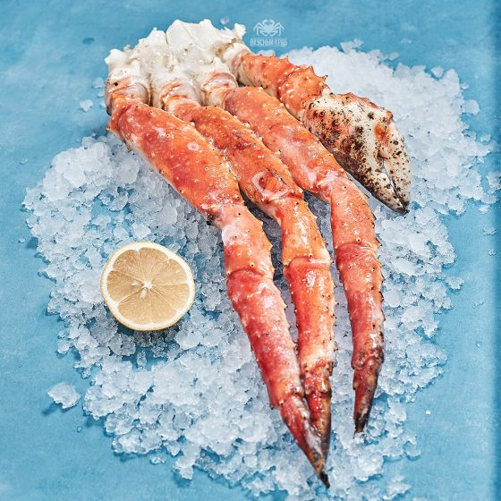

В чём польза напитка
Если соблюдать меру, пиво может быть полезно. Так, стакан напитка восполняет запасы никотиновой и фолиевой кислоты в организме. Эти вещества нужны для профилактики сердечно-сосудистых заболеваний, стимуляции кровообращения, улучшения метаболизма и мозговой деятельности.

Какая часть у краба самая полезная?
В конечностях краба выделяют первую и вторую фаланги, коленце и розу. Первая и вторая фаланга – самые крупные части конечностей, богатые йодом и минералами, они отличаются выразительным, ярким вкусом и подходят для приготовления большинства блюд.
Приготовление блюда по рецепту:
Положите конечности краба на дно большой кастрюли, залейте 4 л. воды и смешайте с приправой для морепродуктов (см. Примечание). Разрежьте лимоны пополам и выжмите сок в кастрюлю, туда же бросьте кожуру. Накройте крышкой и доведите до кипения, затем варите на среднем огне, пока краб не прогреется, около 5 минут. Выложите всё в большую сервировочную миску или блюдо.
Тем временем в небольшой кастрюле на среднем огне растопите сливочное масло. Нагревайте, пока масло не вспенится, около 1 минуты. Снимите с огня и дайте постоять 5 минут. Ложкой удалите твёрдые молочные частицы с поверхности сливочного масла, затем медленно вылейте топлёное масло в небольшую сервировочную миску, оставив водянистую белую сыворотку в кастрюле. Подавайте вместе с крабами.